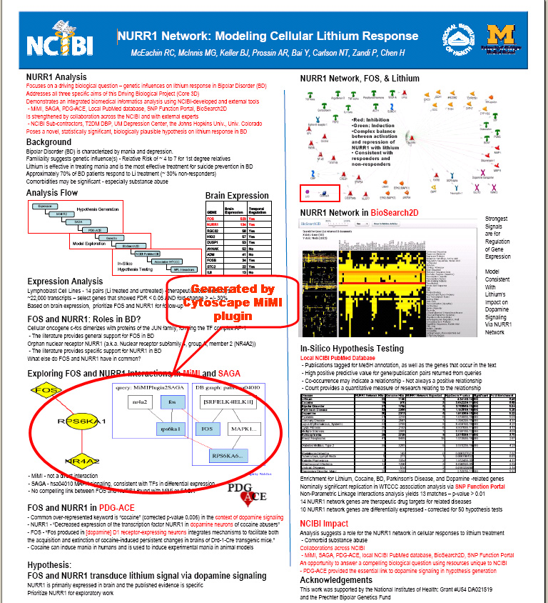
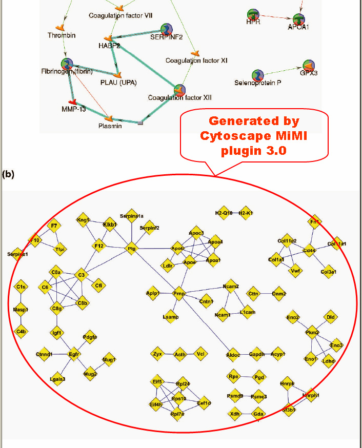
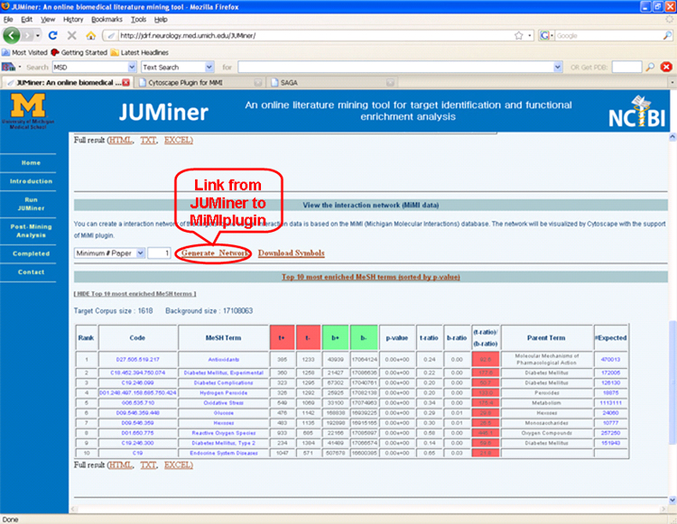
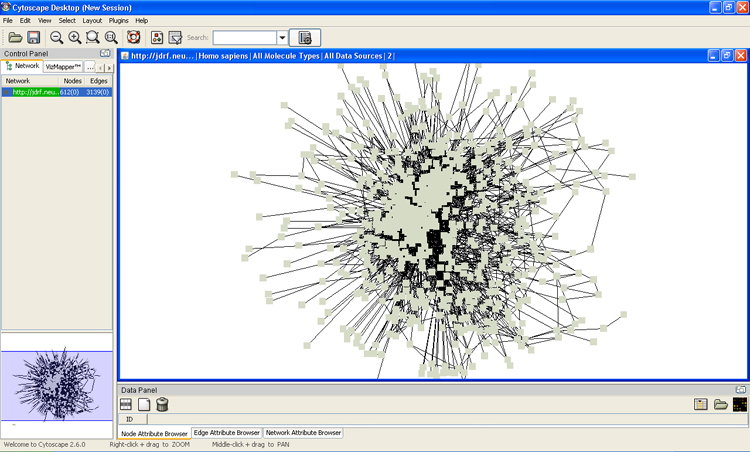

Case Study
- Case Study 1 (Poster for NCIBI Annual All Hands Meeting)
NURR1 Network: Modeling Cellular Lithium Response PDF
- Focuses on a driving biological question -genetic influences on lithium response in Bipolar Disorder (BD)
- Addresses all three specific aims of this Driving Biological Project (Core 3D)
- Demonstrates an integrated biomedical informatics analysis using NCIBI-developed and external tools
- Is strengthened by collaboration across the NCIBI and with external experts
- Poses a novel, statistically significant, biologically plausiblehypothesis on lithium response in BDNURR1

- Case Study 2 (Submitted paper)
Identification of Novel Alternative Splice Isoforms of Circulating Proteins in a Mouse Model of Human Pancreatic Cancer (Rajasree Menon et. al, Center for Computational Medicine and Biology, University of Michigan, Ann Arbor, MI)
To assess the potential of tumor-associated alternatively spliced gene products as a source of biomarkers in biological fluids, we have analyzed a large dataset of mass spectra derived from the plasma proteome of a mouse model of human pancreatic ductal adenocarcinoma. MS/MS spectra were interrogated for novel splice isoforms using a non-redundant database containing an exhaustive 3-frame translation of Ensembl transcripts and gene models from ECgene. This integrated analysis identified 420 distinct splice isoforms of which 92 did not match any previously annotated mouse protein sequence. Isotopic labeling of cysteine-containing peptides from tumor-bearing mice and wild-type controls enabled relative quantification of the proteins. Statistically significant differential expression between tumor-bearing and control mice was noted for peptides from 9 novel alternative splice variant proteins. Our results show that in a mouse model for pancreatic cancer, novel and differentially expressed alternative splice isoforms are detectable in plasma. Novel variants of muscle pyruvate kinase, malate dehydrogenase 1, glyceraldehyde-3-phosphate dehydrogenase, proteoglycan 4, minichromosome maintenance complex component 9, high mobility group box 2 and hepatocyte growth factor activator are of particular interest. Such alternatively spliced protein variants may be a source of candidate biomarkers.
 - Case Study 3 (SciMiner)
An online literature mining tool for target identification and functional enrichment analysis

The Interaction network generated by MiMI plugin for JUMiner
